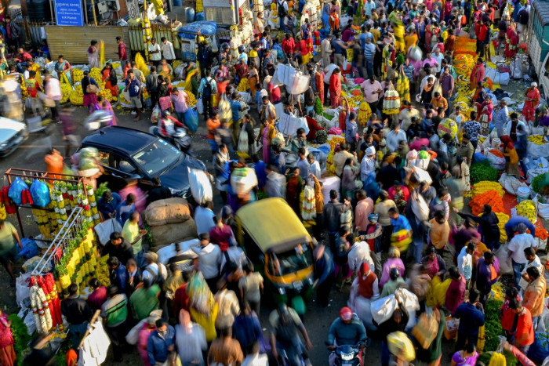

Why the United Nations Overestimated India's Population
Image Credits https://www.bangkokpost.com/opinion/opinion/2588239/china-india-have-fewer-people-than-the-un-thinks
Population estimation is a tricky business, and even the United Nations can sometimes get it wrong. In April, the UN announced that India had overtaken China as the world's most populous country, sparking a media frenzy and widespread speculation about what this could mean for the world. However, according to experts, these projections may have been vastly overestimated. This article explores why the UN may have gotten it wrong and what the implications of this error could be.
The Challenge of Population Estimation
Estimating population size and growth is not an easy task, no matter how sophisticated the methodology. There are multiple factors that impact population growth and demographics, from birth rates and death rates to migration patterns and cultural norms around family planning. Even the most comprehensive data sets can miss important nuances and factors that impact population size. This is why population projections are always imprecise, and yet they are still important for understanding demographic trends and planning for the future.
The UN's Population Projections for India
So why did the UN overestimate India's population? According to experts, there are several factors that could have contributed to this error:
- Mismatched Data: The UN bases its population projections on a variety of sources, including national censuses, surveys, and demographic models. However, these data sources can sometimes be incomplete or contradictory, leading to inconsistencies in the projections. For example, in India's case, the UN relied heavily on data from the 2011 census, which may not accurately reflect the country's current population dynamics.
- Faulty Assumptions: Population projections depend on certain assumptions about fertility rates, mortality rates, and migration patterns. However, these assumptions may not always align with reality. For example, the UN assumed that India's fertility rate would decline faster than it actually has, leading to an overestimation of population growth.
- Unforeseen Events: Finally, population projections are always subject to unforeseen events, such as natural disasters, economic crises, or political upheavals. For example, the COVID-19 pandemic has had a significant impact on population growth and migration patterns around the world, which could disrupt the UN's projections.
The Implications of Overestimating India's Population
So what does it mean if the UN's projections for India are overestimated? There are a few potential implications:
- Policy Planning: Population projections are used by governments, businesses, and international organizations to make decisions about resource allocation, infrastructure planning, and policy development. If the projections are inaccurate, it can lead to misguided policies and ineffective investments.
- Economic Growth: Population growth is often seen as a key driver of economic growth, as it can provide a larger labor force and a larger customer base. If India's population is smaller than expected, it could have implications for its economic growth trajectory and its ability to compete on the global stage.
- International Relations: Finally, if India's population is smaller than expected, it could shift the balance of power in Asia and the world. For example, China may retain its position as the most populous country, which could impact its diplomatic relations and its leverage in international negotiations.
Conclusion
Population estimation is an imperfect art, and even the UN can get it wrong. While it may be tempting to focus on the headline-grabbing announcement that India has overtaken China as the world's most populous country, it is important to remember that these projections are just that - projections. As we await India's 2024 census, it will be interesting to see how accurate the UN's projections turn out to be and what the implications of this error could be for policy, economics, and international relations.
References:
- https://www.aljazeera.com/news/2021/4/26/india-overtakes-china-as-worlds-most-populous-country-un
- https://www.business-standard.com/article/current-affairs/india-s-population-may-be-smaller-than-un-s-estimate-of-1-39-bn-study-122052200823_1.html
- https://thediplomat.com/2021/05/why-indias-population-may-be-smaller-than-we-think/
Hashtags:
- #populationestimation #UN #India #China #demographics #policyplanning #economicgrowth #interntionalrelations
SEO Keywords:
- India population estimation
- UN population projections
- population dynamics in India
- economic implications of population growth
- international relations and population
Article Category:
Technology
Curated by Team Akash.Mittal.Blog
Share on Twitter Share on LinkedIn